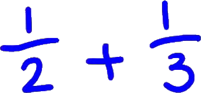
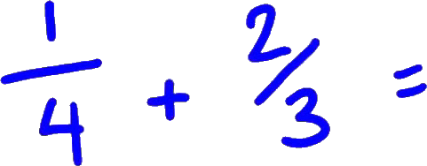

Fractions addition and subtraction trick - do them the fast way
Good Day, and welcome to the Tecmath channel. In this video what we're going to be having a look at is a way of adding two fractions together, uh, and then... Or subtracting two fractions from each other where we have different, uh, denominators, different bottom numbers. So I'll show you how to do this. It's a really, really simple method, and this is the one I usually show my students at school. It saves a lot of hassle.
So, so for instance we have a fraction like this, 1/2 and we want to add to that 1/3, to do this really, really simply, this is what we do.

So hit equals, and I'll put that line there.
And what we do is this, to get the bottom number first off, what we do is we multiply these numbers.
Pretty easy, yeah? And then what we do is we start at the top left here, and we multiply this number by the diagonal here.
OK? So the diagonal bottom number here.
So one times three is three.
We use the same sign which is a plus.
Then we go to the right number here at the top, and we multiply this number by this number.
Three plus two is five, and we've got the bottom number of six.
And there you go, we've got five six. That's the easiest way of doing these. OK? Uh, so there you are, put another one up. Hopefully you got that one. All right, I'll, I'll get another fraction.
What about we have something a bit different? We go one quarter, and I'll put...
what about something like two thirds? And that equals, all right, let's have a look.

Oh, get this pin here and, again, we're work out the bottom number.
We multiply these, 4 times 3 is 12.
We get this number here, the top left, and we multiply it by this number, which is a three.
Use the same sign, multiply this number by this one.
OK? Two by four is eight.
Yeah? You get that? All right.
I'll write a few more examples, because we're going to do a few subtraction ones in a minute. Also, you'll notice with a few of these, uh, they're, they're, they're most simple. Um, so a couple of these you can simplify a bit further.

We'll see if we can get one.
So, what what about if I had one half to three quarters? Hopefully this will work.
And what we do is, again...
You might give this one a go before I start.
Yeah? You might've paused it, and given it a go.
So what we do is we go 2 times 4 are 8, start at the left.
It's really important you start at the left by the way.
I'm not starting over here.
I'm always starting over here you'll notice.
OK? So 4 plus 6 is 10, and then we get 10/8.
Now what you're going to notice first off is that we can simplify this further.
First off we look for a number that goes into both of the top and the bottom, and you'll see right away that, that number is 2.
So we divide the top by 2, we get 5.
We divide the bottom by 2 we get 4.
We can still simplify this.
This is at the moment what we call an improper fraction.
We can turn this into a proper...
Into a mixed number that is.
And the way we do this is.
And the way we do this is we go 5/4 because if this big...
This top number is bigger than the bottom number, you can do this.
5/4 is 1, and 1 left over, we put that 1 over the bottom number, which is 4.
I reckon another one. OK. Hopefully these are not a problem, and hopefully you're picking them up really, really easy. I must say I've always wondered why they teach fractions really difficult. I often get a lot of students come in, and they've done fractions three or four times in dif... in their school career, and they still don't get it, and that's actually a little bit annoying. I... oh. Yeah. So, anyway. I'll shut up, and I'll keep going.
So what about we do 3/4 and we...
We're not going to multiply.
We're going to add that to 1/3.
All right, what does that equal? You get the bottom number 3 times 4, 12.
We go plus 1 times 4 is 4.
That we can simplify further because we have a...
this number here is bigger than this number, so we divide 12 into 13.
12 goes into 13 once, one remainder.
What about if we start with... We could do the subtraction one.
OK, what about that? We do 3/4 takeaway, uh, what a 1/3.
OK? It's the same sort of thing.
This is where it becomes really important that you start in a second.
Uh, in this top left in a little bit.
So, first off we've got four 3s are 12.
And this is where this bit becomes important.
Now, just one little variation on this, by the way. Um, I think this is a good thing to get. But I might even, um, I won't be able to do this straight away, but I'll put a link up to this. And this where, uh, we're looking at how to we... A question looks like this.
Um, say we have something like 1 and 1/2 and we add that to 2 and 1/3, OK.
You're going to notice now I'm not starting with simple fractions.
I'm starting with mixed numbers, OK. And we're going to be adding mixed numbers. Mixed numbers are where we have a whole number and a fraction together. So, the way we deal with this is we have to turn this into what is known as improper fractions. Is, is a fraction where the b- the number on the top is bigger than the number on the bottom. And the simplest way to do that is you get this number, you times it by this number, and you add to this number. That will give you the number at the top.
Over that again to get the number at the top.
This times this, plus this.
The bottom number stays the same.
2 times 3 is 6, plus 1 is 7.
Then the bottom number stays the same.
And then we trade it, uh, what we were before, OK.
What about I use red for this.
Then what we do is we add these guys together, 23.
Now, as you'll see again this number, this is the improper fraction.
This number is bigger than this number.
So we go 23/6 coz this line here means divided by.
23/6 goes three times coz three 6s are 18.
I hope that was of some help. Anyway, we'll, uh, see you next time.